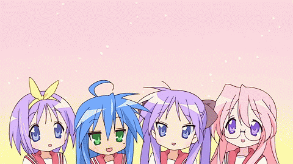

this is simple page that i made for coding practice.
i'll make four pages and put
lucky☆star images each page.
:D yeah. i like anime. haha.

anyway do you like anime? if you do i wanna introduce some anime for you.
the melancholy of suzumiya haruhi, silver spoon, gintama, pokemon' . . .
there are so many great animes and you should watch them.